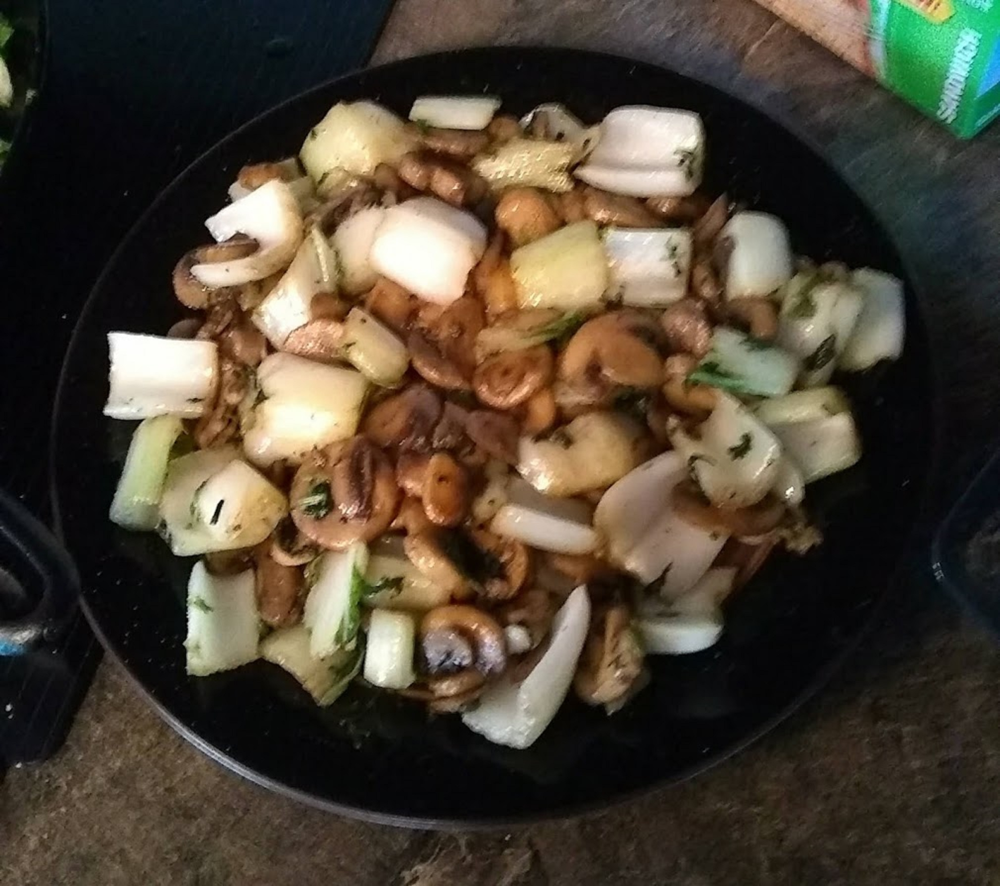

Description
Mmm! Delicious keto recipe!
Ingredients
- 2 tablespoons lard
- 2 tablespoons coconut oil
- 3 cloves garlic, minced, or more to taste
- 1 medium head bok choy, stems and greens chopped and separated
- 2 (8 ounce) packages sliced fresh mushrooms
- 1 cup chopped fresh parsley
- 1 teaspoon ground cumin, or more to taste
- 1 teaspoon pink Himalayan salt, or to taste
Directions
- Heat lard and coconut oil in a large skillet over medium heat. Add garlic and cook until browned and fragrant, 1 to 3 minutes. Add bok choy stems and cook until they are slightly soft on the edges, about 5 minutes. Add bok choy greens and mushrooms. Cook and stir until greens are wilted and mushrooms are soft, about 5 minutes.
- Stir in parsley and season with cumin and salt. Lower heat and simmer for 2 more minutes.
Return to top
Return to home page